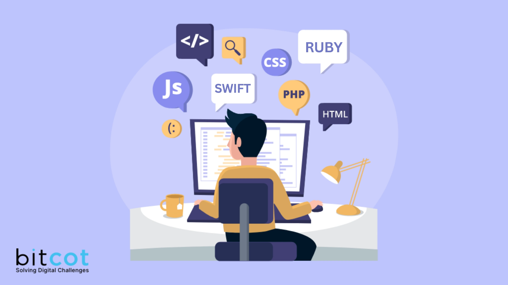

Portfolio Web Page

Project Overview
This project showcases a portfolio website with a modern design and smooth scrolling. It includes sections for home, about me, projects, and contact. The website is fully responsive and features a dark/light theme toggle for better user experience. The goal was to create a visually appealing and user-friendly platform to display my work and skills.
Technologies Used
- HTML5
- CSS3
- JavaScript
- MySQL/PHP
- Font Awesome
- Google Fonts
Features
- Responsive design
- Dark/Light theme toggle
- Smooth scrolling
- Interactive navigation
- Profile image and personal introduction
Challenges and Solutions
One challenge was ensuring the contact form integrated smoothly with the MySQL database. I created a PHP file to manage the connection and troubleshoot any issues during the setup. Testing in XAMPP helped me identify and resolve errors before deploying the website.
Future Improvements
Future improvements could include adding more interactive elements such as animations and transitions, integrating a blog section, and enhancing the contact form with validation and backend integration. Additionally, I plan to continuously update the portfolio with new projects and skills as I progress in my career.
Reflection
Building this portfolio has been a rewarding experience, combining both my technical skills and creativity. It allowed me to apply what I've learned in HTML, CSS, JavaScript, PHP, and MySQL and creating a digital space I'm proud to share with others.
View on GitHub